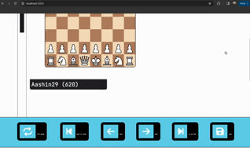
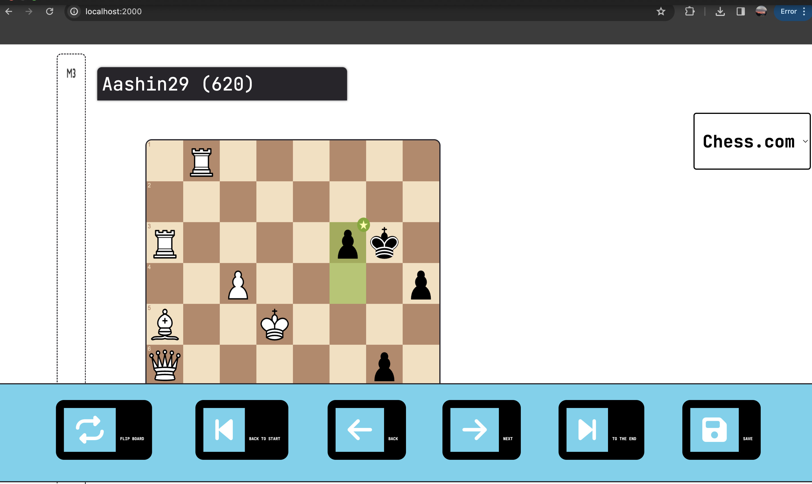
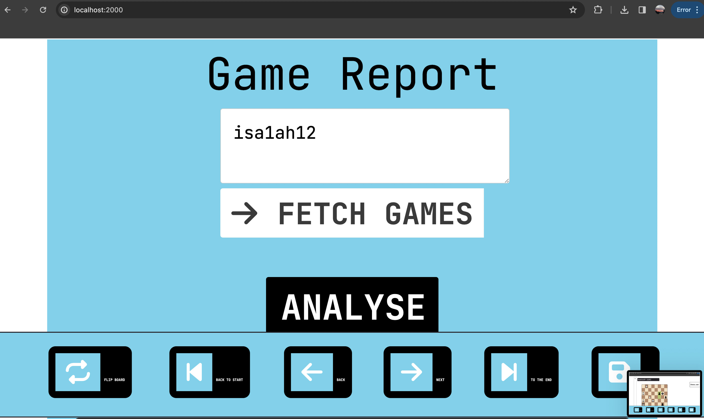

Welcome to my chess analyzer, where chess enthusiasts can elevate their game to new heights with our innovative game analysis tool. My web app seamlessly integrates with Chess.com accounts, allowing users to effortlessly access and analyze their past games for strategic insights and improvement.
With our intuitive interface, users can easily navigate through their game history, review move-by-move analyses, and uncover patterns in their gameplay. Whether you're a beginner looking to learn from your mistakes or a seasoned player aiming to refine your strategies, our tool provides comprehensive game analysis, completely free of charge.
Gain a deeper understanding of your gameplay, identify areas for growth, and sharpen your skills with my chess bot's game analysis feature. Join our community of passionate chess players today and take your game to the next level!



python-chess.engine)Pipeline Overview: Client → API Fetcher → PGN Parser → Stockfish Evaluator → Data Aggregator → Report Generator
[User Input]
│
▼
[Chess.com API Fetcher] ───► PGNs
│
▼
[PGN Parser (python-chess)] ───► Move data
│
▼
[Stockfish Evaluator] ───► Scores, best moves
│
▼
[Aggregator / Analytics] ───► Game stats, accuracy
│
▼
[Visualizer / Report] ───► Charts, summaries
| Metric | Value |
|---|---|
| Total Games Analyzed | 200 |
| Average Accuracy | 74% |
| Average Blunders/Game | 1.8 |
| Best Opening | Sicilian Defense |
| Weakest Phase | Endgame |
# Analyze all games for a Chess.com user
python analyze.py --user --engine /path/to/stockfish --out results/